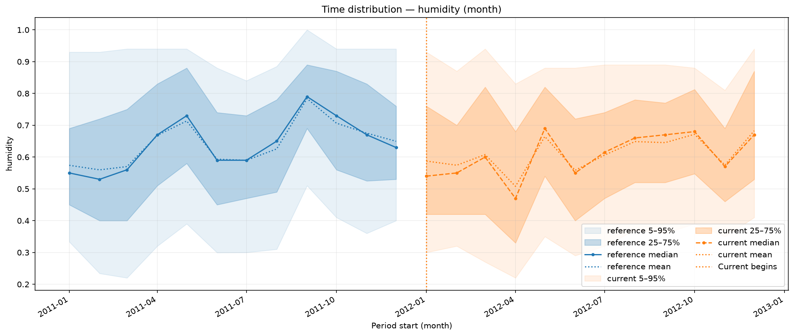
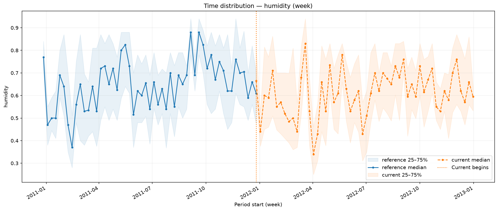

Numerical distributions¶
Inspect the location and spread of a measured numerical feature over time.
NumericalFeatureDistributions compares train and held-out rows on their
recorded calendar axis. Its statistics are unweighted, independent of
Pool.weight, and use original feature values rather than fitted levels.
Prepare observations¶
Run from the installed repository checkout after the data preparation. The example compares recorded 2011 hours with 2012 hours. Humidity is the source's normalized measurement. No model fitting or predictions are needed.
from pathlib import Path
import polars as pl
from examples.gallery_data import load_bike_pool
from ml_toolkit.training import Holdout
from ml_toolkit.config import FigureConfig
data = load_bike_pool(download_if_missing=False)
partition = Holdout(data, test_size="2012-01-01").get_test()
train, test = partition.train, partition.heldout
assert test is not None
split = pl.Series("split", ["train"] * len(train) + ["test"] * len(test))
output = Path("figures")
figure = FigureConfig(dpi=150)
print(f"2011 train hours: {len(train)}; 2012 test hours: {len(test)}")
2011 train hours: 8645; 2012 test hours: 8734
Add a distribution report¶
Use reports as data_analyzers in
training, or write the reports directly:
from ml_toolkit.data_analysis import NumericalFeatureDistributions
reports = [
NumericalFeatureDistributions(features=("humidity",), period="month")
]
files = reports[0].write_artifacts(
data=data,
split=split,
artifact_dir=output / reports[0].name,
figure=figure,
features=None,
n_bins=10,
)
print([path.relative_to(output).as_posix() for path in files])
['numerical_feature_distributions/000_humidity.png']

The x-axis shows calendar periods and the y-axis normalized humidity. Shaded bands contain the 5th–95th and 25th–75th percentiles; lines mark the median and mean. Here reference means 2011 train and current means 2012 test. Read seasonal variation separately from a lasting distribution shift.
features=None selects numeric columns of Pool.X; a tuple restricts the
selection. Explicit missing or nonnumeric features raise an error. An empty
selection produces no figures. quantile_bands, show_mean, and show_median
control the visible summaries, and period sets the calendar grouping.
Shared feature-level definitions and n_bins are unused.
Inspect the numerical summaries¶
from ml_toolkit.plots import monitoring
reference = train.X.with_columns(train.time.alias("timestamp"))
current = test.X.with_columns(test.time.alias("timestamp"))
time_distribution = monitoring.time_feature_distribution(
reference,
current,
"humidity",
"timestamp",
output / "direct-humidity.png",
period="month",
figure=figure,
)
print(
time_distribution.select("period_start", "split", "p50", "mean")
.head(6)
.with_columns(pl.col("mean").round(3))
.write_csv(),
end="",
)
period_start,split,p50,mean
2011-01-01T00:00:00.000000,reference,0.55,0.574
2011-02-01T00:00:00.000000,reference,0.53,0.56
2011-03-01T00:00:00.000000,reference,0.56,0.57
2011-04-01T00:00:00.000000,reference,0.67,0.668
2011-05-01T00:00:00.000000,reference,0.73,0.713
2011-06-01T00:00:00.000000,reference,0.59,0.593
The returned Polars table has one row per observed sample/period with quantile and mean columns. Nulls and non-finite values are omitted from statistics. Empty numerical groups have no computed values. Calendar ordering, timezones and periods follow the shared rules.
Use weekly groups and a single interquartile band when a finer view is useful:
weekly = monitoring.time_feature_distribution(
reference,
current,
"humidity",
"timestamp",
output / "time-humidity-week.png",
period="week",
quantile_bands=((0.25, 0.75),),
show_mean=False,
figure=figure,
)
print(weekly.select("period_start", "split", "p50").head(4).write_csv(), end="")
period_start,split,p50
2010-12-27T00:00:00.000000,reference,0.77
2011-01-03T00:00:00.000000,reference,0.47
2011-01-10T00:00:00.000000,reference,0.5
2011-01-17T00:00:00.000000,reference,0.5

API reference¶
NumericalFeatureDistributions
dataclass
¶
NumericalFeatureDistributions(
*,
name: str = "numerical_feature_distributions",
features: tuple[str, ...] | None = None,
period: TimePeriod = "month",
quantile_bands: tuple[tuple[float, float], ...] = (
(0.05, 0.95),
(0.25, 0.75),
),
show_mean: bool = True,
show_median: bool = True
)
Bases: DataAnalyzer
Compare unweighted numerical time distributions on original features.
Parameters:
| Name | Type | Description | Default |
|---|---|---|---|
name
|
str
|
Unique report name and artifact namespace. |
'numerical_feature_distributions'
|
features
|
tuple of str or None
|
Numeric feature names to display. None uses numeric columns in Pool.X; an empty tuple selects none. Missing or nonnumeric names raise ValueError. |
None
|
period
|
TimePeriod
|
Calendar grouping in the data timezone. |
'month'
|
quantile_bands
|
tuple of pairs
|
Lower and upper quantiles for shaded distribution bands. |
((0.05, 0.95), (0.25, 0.75))
|
show_mean
|
bool
|
Whether to draw each central summary. |
True
|
show_median
|
bool
|
Whether to draw each central summary. |
True
|
Notes
Compares train with validation or test using unweighted original values, independent of predictions, Pool.weight, shared feature rules, and n_bins. Nulls and non-finite values are omitted. Saves one indexed feature filename in the report root.
monitoring ¶
Time distributions of numerical features.
time_feature_distribution ¶
time_feature_distribution(
reference: DataFrame,
current: DataFrame,
feature: str,
timestamp: str,
save_fig: str | Path,
*,
period: TimePeriod = "month",
quantile_bands: tuple[tuple[float, float], ...] = (
(0.05, 0.95),
(0.25, 0.75),
),
show_mean: bool = True,
show_median: bool = True,
figure: FigureConfig | None = None
) -> pl.DataFrame
Plot configured time-based quantile bands, median, and mean.
Parameters:
| Name | Type | Description | Default |
|---|---|---|---|
reference
|
DataFrame
|
Reference frame containing feature and timestamp columns. |
required |
current
|
DataFrame
|
Current frame containing the same required columns. Its earliest timestamp must be at or after the latest reference timestamp. The split may fall inside one grouping period. |
required |
feature
|
str
|
Numerical feature to summarize. |
required |
timestamp
|
str
|
Date/Datetime column used for calendar grouping. |
required |
save_fig
|
str or Path
|
Output figure path; parent directories are created. |
required |
period
|
TimePeriod
|
Calendar grouping in the matching input timezones. Minute/hour need Datetime; weeks start on Monday. Empty periods are not filled. |
"month"
|
quantile_bands
|
tuple of pairs
|
Quantile intervals shaded on the chart. |
((0.05, 0.95), (0.25, 0.75))
|
show_mean
|
bool
|
Display the corresponding unweighted time summaries. |
True
|
show_median
|
bool
|
Display the corresponding unweighted time summaries. |
True
|
figure
|
FigureConfig or None
|
Export dimensions, resolution, and format; None preserves native output. |
None
|
Returns:
| Type | Description |
|---|---|
DataFrame
|
period_start, split, mean, p50, and configured endpoint quantiles named by percentage, such as p05 or p2_5. Defaults produce period_start, split, p05, p25, p50, mean, p75, p95. Summaries are unweighted. |
Raises:
| Type | Description |
|---|---|
ValueError
|
Required columns are missing, timezones differ, or the latest reference timestamp exceeds the earliest current timestamp. |
TypeError
|
Feature is not numerical or timestamp is not Date/Datetime. |
Notes
Null and non-finite values are omitted. Saves and closes the figure, including when there are no finite values.